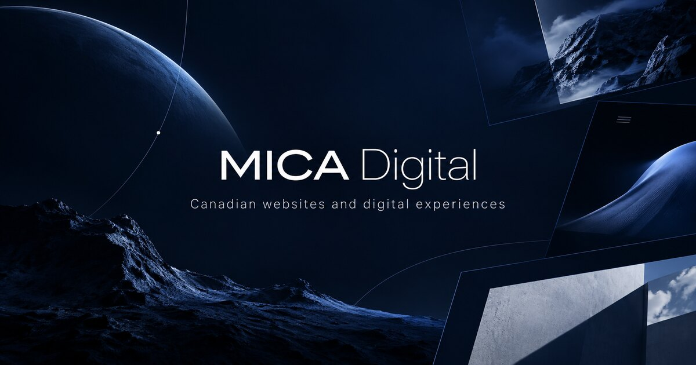
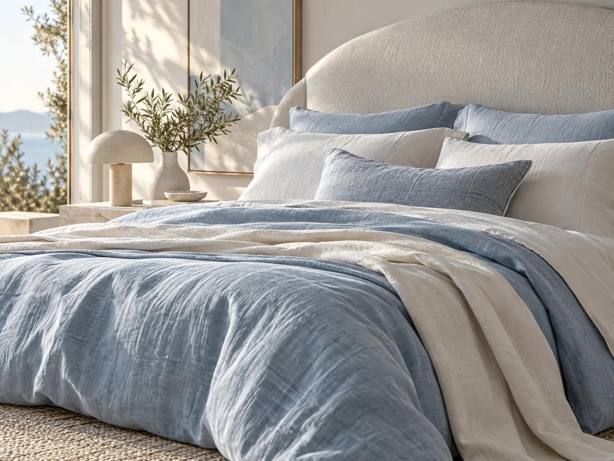
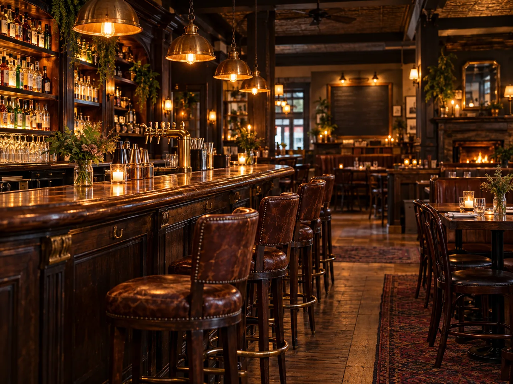

Websites
Complete, polished websites that explain the business clearly and make action easy.
Strategy / Design / Build
Scroll to exploreAn Indigenous-owned digital studio led by a First Nations designer in Barrhaven, Ottawa.
Built in Canada for Canadian businesses, so more of your investment stays here.
Designed to be clear, fast, and easy to use on phones, tablets, and computers.
You will know what we are building, what it costs, and what happens next before work begins.
Web / UX / Development
Structure, writing, interaction, and development are planned together so customers can understand your business and reach you easily. Based in Barrhaven, Ottawa, MICA works remotely with businesses across Ontario and Canada.
What we build
Complete, polished websites that explain the business clearly and make action easy.
Strategy / Design / BuildFocused redesigns that improve structure, usability, accessibility, and credibility while keeping what already works.
Audit / Structure / RebuildHuman-centred decisions grounded in how people understand, navigate, and trust technology.
Research / Accessibility / TestingFront-end and back-end development for custom interactions and focused digital functionality.
Responsive / MaintainableMICA / INTERFACE STUDIES
Original interfaces demonstrating MICA’s visual range.
08 / 12 NODES · 15 ACTIVE LINKS
Technology / Product architecture
Choose one thing for today.
Calm experience / Everyday planning
Arts / Dramatic editorial
Pet care / Editorial lifestyle
Restaurant / Menu-first / Seasonal menu, Ottawa
Repairs, upkeep, and seasonal help.
Request an estimateLocal service / Clear decisions
Spatial archive / Interactive architectural study
House / Ottawa
Adaptive reuse
Architecture / Project archive
Children’s learning / Playful access
Independent advice for important decisions.
Professional services / Trust & clarity
Arts & culture / Experimental navigation
Community information / Accessible directory
Editorial restraint / Quiet, material-led presentation
Local business energy / Bold, direct service information
Professional clarity / Restrained advisory interface
Creative expression / Playful, high-contrast composition
Product interface / Technical system overview
Accessible information / Clear, scannable hierarchy
Whisked Away / Conceptual bakery interface
Technology / Speculative systems interface
Construction / Local project planning
Product company / Diagonal editorial system
Navigation / Diagonal spatial interface
Space / Solar system explorer

Bedding / Tactile product editorial
Dinosaur / Interactive Velociraptor field guide

Local pub / Bar and grill atmosphere
Build and inspect connected model layers.
Explore the network ↗Neural networks / Model studio concept
Mental health / Immediate support
Project process
We clarify what the website needs to say, show, and help customers do.
Structure, writing, visual design, and development move forward as one connected project.
We launch it, show you how it works, and hand over the keys.
Project inquiries